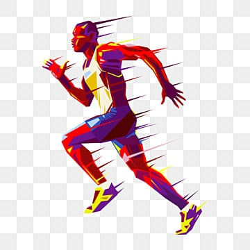
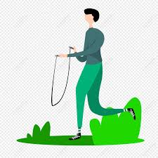

Quiz Sport Santé
 
1. Il est conseillé de faire une activité physique:
Avant midi.
Peu importe.
Le soir.
Le matin très tôt.
2. L’activité physique régulière, même modérée, permet:
De dire à tout le monde qu'on fait de l'activité physique régulière, même modérée.
De contrôler son poids, de réduire le risque d'accidents cardiaques et de prévenir l'apparition du diabète de type 2.
De transpirer à grosses gouttes.
Devenir bodybuilder.
3. Quelle est la durée minimale quotidienne d’activité physique recommandée chez l’adulte?
60 minutes
10 minutes
Plus d'1 heure
30 minutes
4. À quel âge doit-on cesser de faire une activité physique régulière?
65 ans
55 ans
80 ans
Jamais
Valider les réponses